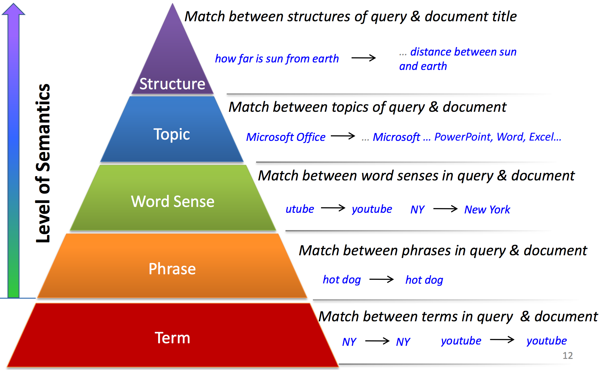

Many question answering systems look for answers in documents from the web or books. Knowing the contents or class of the document would likely be helpful in building the system. Reversely, knowing which documents are of a certain class could dramatically narrow the search space for documents containing the answer. We will refer to assigning a class or keyword as classifying the document. Ranking documents from a corpus most relevant to a keyword is called document filtering. Note both doucment classification and filtering make use of classifiers as we will explain.

A simple approach to assinging a class to a document is to assign it to the most frequent word occuring in the document. Called bag-of-words model, it can produce a keyword in the general domain of the document once stemming words and common words, stop words, are removed. A more domain - in our case the document corpus - sensitive keyword might result from chossing the word with the highest tf-idf value in the document. Using tf-idf instead of bag-of-words, will result in keywords that are less frequent across the domain and more unique to the document.

More advanced techinques to assign keywords to documents use classifiers. Classifiers can take a set of labeled training data, documents with known keywords, and classify new doucments based on a model it creates from the training data. Common classifiers used in document classification are K-nearest neighbors, decision trees, naive bayes, SVM, etc. Classifiers however, create models based on vector representations of the documents. Ideally, once trained, the model should classify a document with a similar feature vector to a training example as the same class as the training example. K-nearest neighbors classifier would assign a keyword to a doucment based on the k nearest documents' keywords.

To see an interesting implementation of k-nearest neighbors to classify hand-written digits checkout Burton DeWilde's example
Feature vectors can be any combination of word frequency counts, tf-idf values, n-gram counts, etc. Basically anything that describes the contents and context of the document is likely a good candidate for a feature in the feature vector. One common feature that captures some context, is the n-grams model. The n-grams model counts the number of times n sequence of words occurs in the document. Comparing phrases in documents is an easy way to represent order dependent data and involve distributional semantics.

A simple approach to ranking documents from a corpus based on a keyword is to pick the document in which the keyword appears most frequent or has the highest tf-idf value. This approach would seem to have some success, as long as the keyword lies in the text. If keywords for the document aren't directly in the text, then training a classifier with a labeled set of data could be a solution. A set of example keyword and corresponding highest document rankings is needed. So far we have only classified feature vectors from texts where the features only extract basic semantics -- up to the second level on the chart below. To improve the keyword to document ranking more semantic information should be considered. Especially if keyword misspelling must be considered, such is the case with search engine queries.
Checkout how Microsoft applies machine learning to retrieve documents for search engine queries example